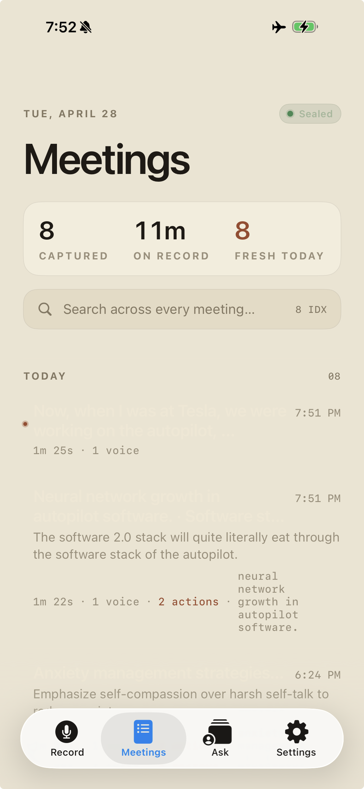
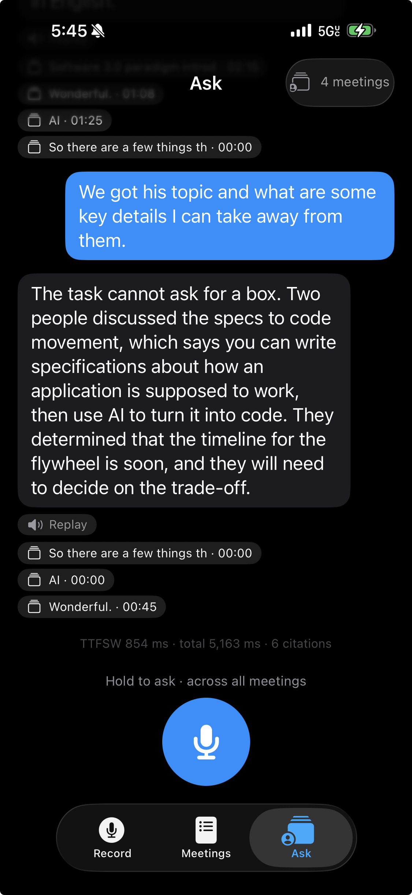
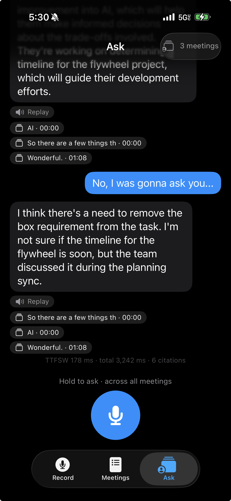
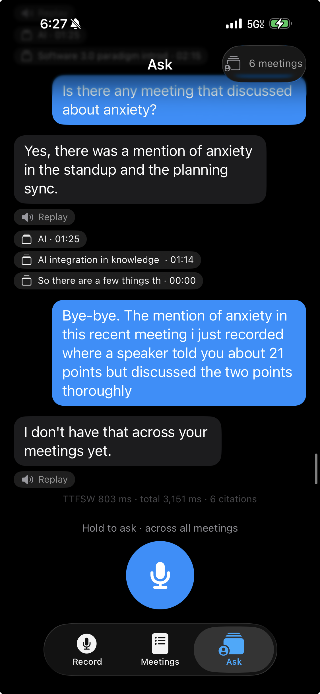
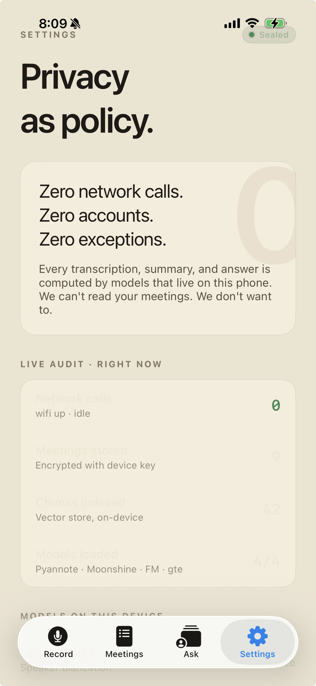

Days 4 and 5 took the working voice loop and made it feel like a product. The phone now answers in a real human voice — not the system synthesizer — and labels who said what during the meeting. The interface was rebuilt around an editorial typography system, and a new Settings tab proves the privacy claim by reading live device state.
@Query counts, probes model bundles via FileManager, watches NWPathMonitor, and exposes a Verify button — nothing on that screen is cached or hand-waved. First on-device install surfaced five UI bugs; all five patched the same evening.




@Query for meeting and chunk counts, FileManager probes via ModelLocator for bundle integrity, PrivacyMonitor.state for the network row. The Verify button runs an actual probe sequence, not a hardcoded green check. Recorded in ADR-016.